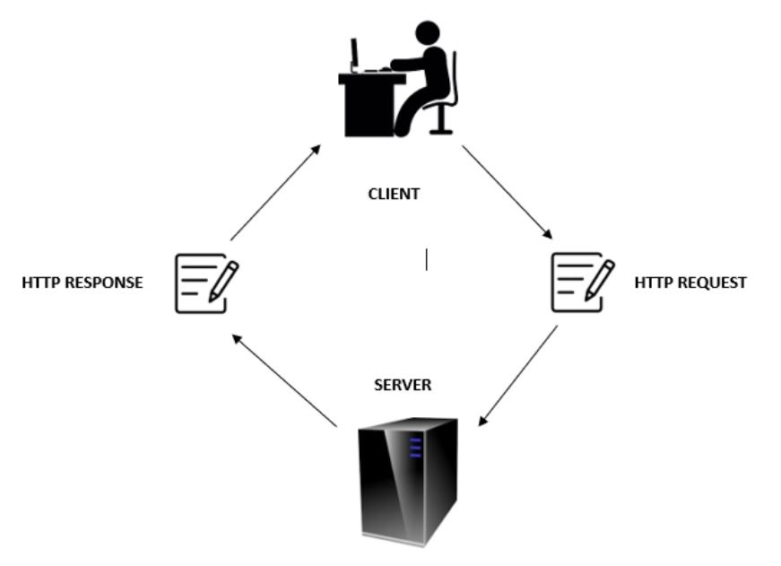

HTTP Request & Response Message
HTTP Request Message
HTTP Request consists of Message Headers, Request Line, Empty Line, Body.
-
Message Header - It contains a general header and Entity header.
These are the important message header field:
Accept image/gif/txt Accept-Language en-us Accept-Encoding gzip, deflate, br Authorization www.google.com

- Request Line - The request line contains URI(User Resource Identifier), HTTP Version Number, HTTP Verb, and also identify the different method token (GET, POST, PUT, DELETE).

- Message Body - Connects to the request and responds and it differs from entity body you can also add any other information about the request that is sent to the server.
- Empty Line - It seperates the two entities: the header and the body.
HTTP Response Message
- If a request is completed, a specific response will be sent to the server.
- A server replies with an HTTP response message after getting the request message.
- Response message use caching to store a copy of the response message and the system that controls its message storage, retrieval and deletion.
According to RFC 2616 HTTP/1.1 June 1999
- A response comes directly without unnecessary delay and its validity is directly checked with the origin server.
- Status line is the first line in a response message it consists of protocol version followed by their corresponding numeric status code and textual phrase.
- Status-code element is a 3- digit integer result code to understand the request.
- Reason Phrase is intended to give a short description for the status code.
Status-Line

Status code and Reason Phrase
Example of common Status code and Reason Phrase are:
Response Header- Field
| Accept-Ranges | Used by the server to support the partial request. |
| Age | It contains of the time seconds the object has stayed in the cache. |
| ETag | a mechanism that puts unchanged resources into the cache. |
| Location | is the indicator when redirecting to another page it specifies the URL to be used. |
| Proxy-Authentication | is the one which chooses the authentication method to be used so that access can be gained to a resource behind a proxy server. |
| Retry-After | is the one responsible in informing the user agent on how long to wait before making another follow-up request. |
| Server | handles requests because it contains the information about the software that is being used by the origin server. |
| Vary | determines the matching of future request headers to be able to come up whether a cached response could be used or if it should request a new one from the origin server. |
| WWW-Authenticate | is the one responsible in defining the authentication method that is the one responsible in defining the authentication method that |
Empty line
According to RFC 822
- Empty line- indicating the end of the header field and message body.
Message Body
- Message body is a protocol element it represents line break that breaks between body-parts.